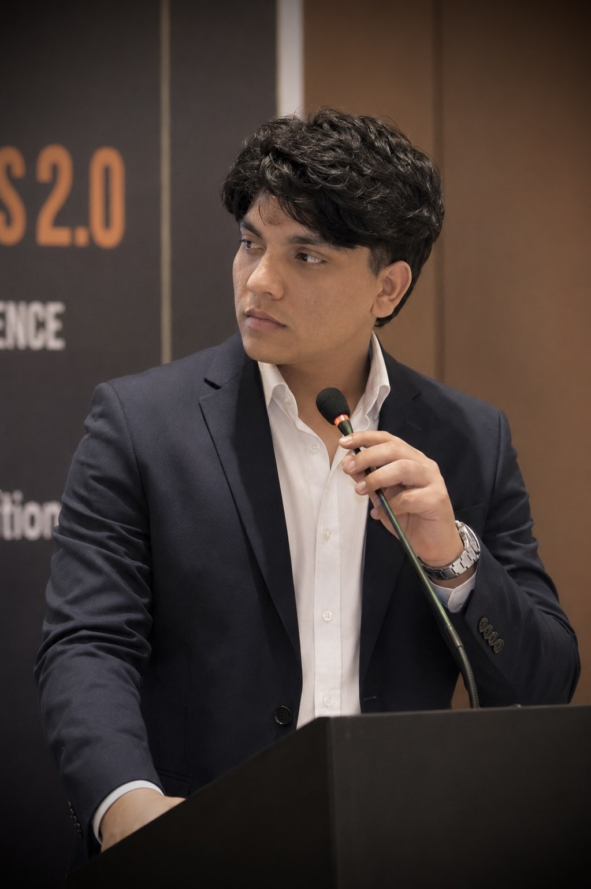

DAHIYA GLOBAL VENTURES
A bright, modern venture ecosystem focused on useful digital products, education and ambitious ideas built with clarity and purpose.
01 / ABOUT
Dahiya Global Ventures is being shaped as a home for focused digital ventures. The ecosystem starts with education and is designed to expand carefully as new ideas become real products.
Build something useful. Make it beautiful. Keep improving it.
The current chapter is centred on Deutsch mit Jitu, a German-language education platform. The bigger vision is to create a portfolio of modern digital experiences with strong identities and practical value.
02 / THE VENTURE
German learning designed around structured progress, practical communication and exam preparation.

04 / FOUNDER
Founder and builder behind Dahiya Global Ventures. The venture ecosystem begins with education and a long-term interest in technology, digital products and practical innovation.
05 / NEXT MOVE
For business, collaboration and venture conversations, connect through the official channels.
Start a conversation ↗
03 / CONNECT
Follow the
journey.
Official digital presence for the active venture, Deutsch mit Jitu. Unverified platforms are intentionally not linked.